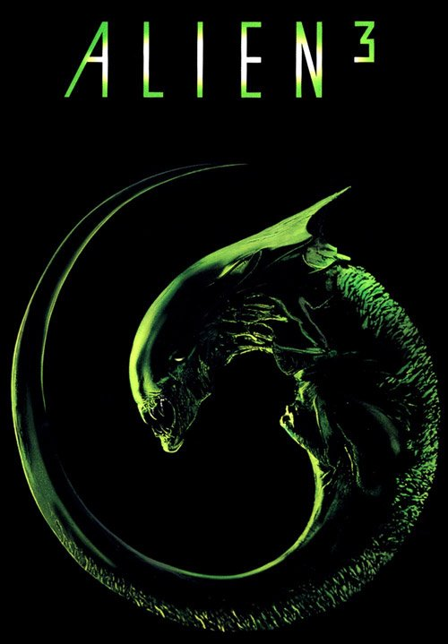
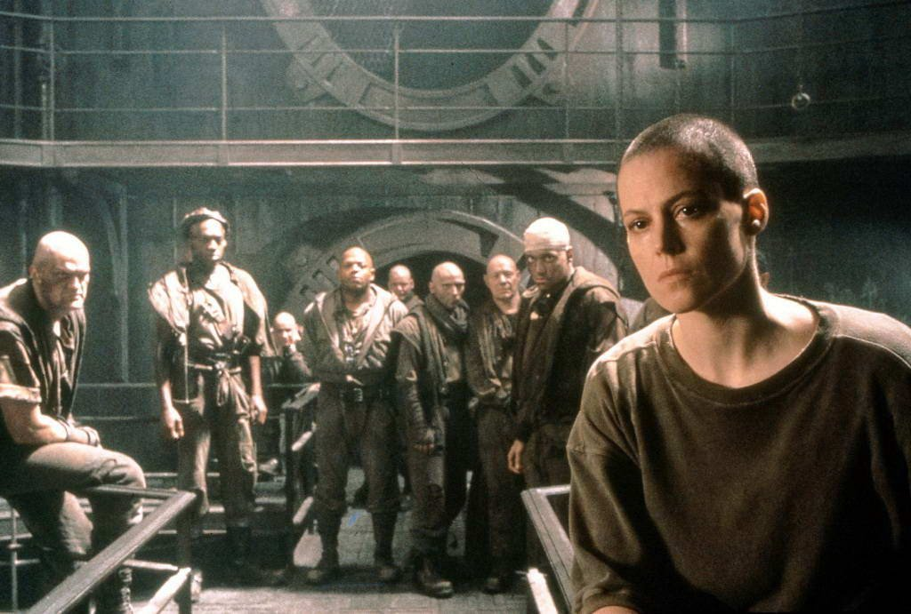
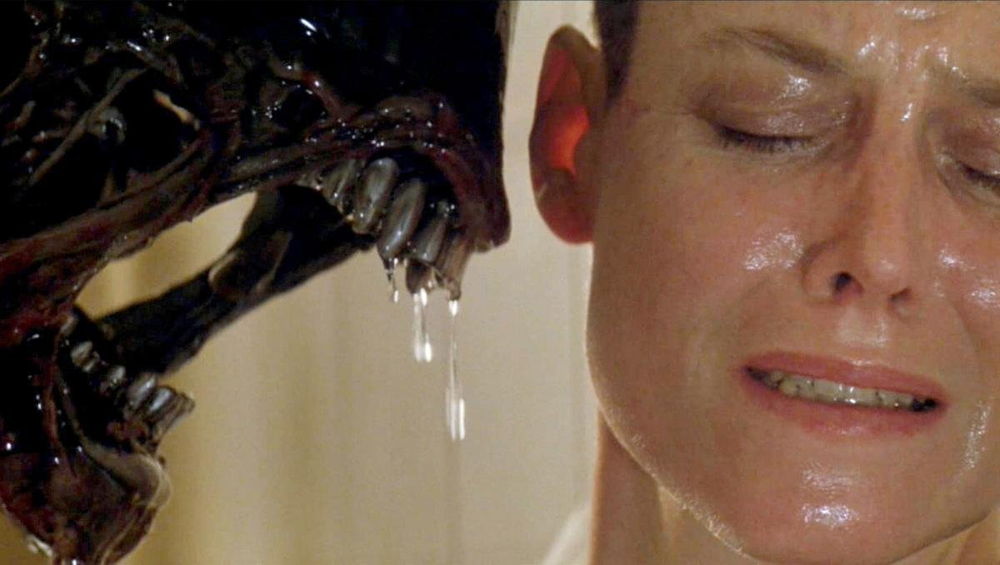

Celui-là, je l'ai découvert à l'envers.
Avant même de voir le film, j'en ai vu les coulisses. À l'époque, une cassette était vendue avec Aliens, le retour : le making of d'Alien 3. C'est comme ça que je suis entré dans le troisième chapitre, par les décors, les plateaux, les équipes au travail, et la créature avant qu'elle ne soit lâchée à l'écran.
J'avais vu comment on fabriquait le cauchemar avant de le vivre.
Quelque temps plus tard, le film est passé sur Canal+. Je devais avoir une dizaine d'années.
Et ce n'était ni l'horreur silencieuse du premier, ni la guerre du deuxième. C'était autre chose : un film sombre, rouillé, désespéré, avec une Ripley au crâne rasé, seule au bout du monde, sans armes et sans alliés.
Ce soir, on descend au fond de Fiorina 161.

Alien 3 — affiche, 1992
Alien 3.
1992. Réalisé par David Fincher. Avec Sigourney Weaver, Charles S. Dance, Charles S. Dutton et Lance Henriksen.
Après l'horreur de Ridley Scott et la guerre de James Cameron, la saga confie son troisième chapitre à un inconnu de vingt-neuf ans, venu du clip vidéo et de la publicité. C'est son tout premier long métrage. Il s'appelle David Fincher, et il signera quelques années plus tard Seven et Fight Club.
Le film s'ouvre sur un choc. La navette de Ripley s'écrase sur Fiorina 161, une planète perdue où ne subsiste qu'une ancienne prison-fonderie. Ses seuls habitants sont une poignée de détenus, des hommes condamnés, qui ont trouvé refuge dans une forme de foi.
Il n'y a ni armes, ni marines, ni technologie : seulement des couloirs rouillés, du métal en fusion, et une femme seule au milieu d'hommes qui n'ont pas vu de femme depuis des années.
Et la créature est à bord.
C'est la vision la plus sombre de toute la saga, la plus dépouillée, la plus désespérée. La question n'est plus de savoir comment combattre le monstre, mais ce qu'il reste à Ripley quand tout lui a été enlevé.
Alien 3 est peut-être le film le plus chaotique de toute la saga, avant même d'arriver à l'écran.
Après le triomphe d'Aliens, la Fox veut une suite rapidement. Mais pendant plusieurs années, le projet passe de main en main. Le romancier William Gibson, pionnier du cyberpunk, écrit une première version, où Ripley est presque absente. D'autres scénaristes se succèdent. Renny Harlin, le futur réalisateur de 58 minutes pour vivre, est un temps associé au projet, avant de s'en aller.
Puis arrive le cinéaste néo-zélandais Vincent Ward, avec une idée étrange et poétique : une planète entièrement en bois, habitée par des moines. Il quitte à son tour le projet, mais son univers survit en partie : le monastère deviendra une prison, et les moines des détenus convertis à une forme de foi.
C'est alors que la Fox fait un pari audacieux. Elle confie le film à David Fincher, vingt-neuf ans, un réalisateur de clips et de publicités brillant, mais qui n'a encore jamais tourné de long métrage.
Le tournage commence en Angleterre, aux studios de Pinewood, sans que le scénario soit terminé. Les pages sont réécrites au jour le jour. Le budget gonfle, le calendrier dérape, et les tensions entre Fincher et le studio deviennent permanentes.
Sigourney Weaver, devenue aussi coproductrice, s'engage totalement. Elle accepte de se raser le crâne pour le rôle, et défend une vision sombre et radicale de Ripley.
La créature est confiée à Tom Woodruff Jr. et Alec Gillis, anciens collaborateurs de Stan Winston. Pour la première fois, l'alien se déplace à quatre pattes, rapide comme un animal. Elle est animée à la fois par des marionnettes et par les toutes premières images de synthèse de la saga. La musique est signée Elliot Goldenthal.
Le film sort aux États-Unis en mai 1992. Mais à ce moment-là, David Fincher a déjà quitté la production. Le montage final s'est fait en grande partie sans lui, et il n'a jamais reconnu le film comme le sien.

Ripley face aux détenus de Fiorina 161
Une navette de secours traverse l'espace, en flammes. À bord, un incendie s'est déclaré pendant le sommeil des passagers. L'appareil s'écrase sur Fiorina 161, une planète désolée, battue par les vents.
Ellen Ripley est la seule à en sortir vivante.
Elle se réveille dans l'infirmerie d'un ancien pénitencier à moitié abandonné, où ne vivent plus qu'une vingtaine de détenus parmi les plus dangereux, chargés d'entretenir une fonderie. Ils ont fait vœu de chasteté et suivent une foi rigoureuse, guidés par l'un d'eux, Dillon. Le directeur, Andrews, voit d'un très mauvais œil l'arrivée d'une femme parmi eux. Seul le médecin, Clemens, lui offre un peu de chaleur.
Sur cette planète, il n'y a pas d'armes, pas de technologie, aucun moyen de prévenir les secours rapidement.
Ripley sent pourtant que quelque chose ne va pas. Elle soupçonne que l'accident n'en est pas vraiment un, et que la navette n'était pas tout à fait vide.
Très vite, des hommes disparaissent dans les couloirs de la prison. Une créature rôde dans les conduits et les galeries de la fonderie, plus rapide, plus animale que tout ce que Ripley a affronté jusque-là.
Une femme seule, des condamnés qui n'ont plus rien à perdre, et une question qui hante tout le film : jusqu'où peut-on aller quand on n'a plus rien à défendre que la survie des autres ?
Alien 3 est la vision la plus radicale de toute la saga, et sans doute la plus mal comprise.
Après la surenchère d'Aliens, on attendait une suite encore plus grande, avec plus de créatures, plus d'armes et plus d'action. David Fincher fait exactement l'inverse. Il retire tout : les marines, les fusils, la technologie, les alliés. Il revient à l'idée du premier film, une seule créature dans un lieu clos, mais en la poussant vers quelque chose de plus sombre encore.
Le premier choc, c'est l'atmosphère. Fiorina 161 ne ressemble à aucun autre décor de la saga. Ce ne sont plus des vaisseaux high-tech, mais une fonderie rouillée, des couloirs de pierre, des fours géants, une lumière ambrée qui baigne tout dans une couleur de métal en fusion. Fincher filme cet univers comme une cathédrale industrielle, avec une précision visuelle qui annonce déjà Seven.
Le deuxième choc, c'est Ripley. Elle arrive dépouillée de tout, sans famille, sans espoir, le crâne rasé comme les détenus qui l'entourent. Elle n'est plus la combattante d'Aliens, mais une femme épuisée, fatiguée de survivre, qui doit trouver une dernière raison de se battre. Sigourney Weaver la joue avec une gravité nouvelle, presque tragique. C'est sa Ripley la plus humaine, et la plus vulnérable.
Autour d'elle, Fincher installe une communauté inquiétante : des condamnés repentis, d'une foi rigide, qui voient en elle une menace. Charles S. Dutton, dans le rôle de Dillon, leur chef spirituel, apporte une présence magnétique. Charles Dance, en médecin désabusé, offre au film ses rares moments de douceur.
La créature, enfin, change de nature. Plus animale, plus rapide, elle court sur les murs et les plafonds. Fincher la filme souvent de son propre point de vue, en caméra subjective dans les couloirs, ce qui donne au film des poursuites hallucinées.
Le film a pourtant ses failles, héritées de son tournage chaotique. Le rythme est inégal, plusieurs détenus se ressemblent au point de se confondre, et certains effets numériques ont mal vieilli. On sent parfois qu'il manque des morceaux.
Mais pour moi, qui avais découvert le film par son making of, il y avait une évidence : derrière ce chaos, il y avait une vraie vision. Alien 3 n'est pas une suite de plus. C'est un film sur la perte, le sacrifice et la fin d'un cycle.
C'est la troisième vision. Celle du désespoir.

Face à face : Ripley et la créature
Alien 3 n'a pas été oublié. Il a été rejeté.
Le premier coup est venu des fans. Ceux qui avaient aimé Aliens, et ils étaient nombreux, attendaient de retrouver Hicks, Newt et l'esprit de famille né dans le film de Cameron. Dès les premières minutes, Alien 3 fait le choix inverse et balaie cet héritage. Pour beaucoup, c'était une trahison, et le film ne s'en est jamais vraiment remis.
Le deuxième coup, c'est le box-office américain. Environ cinquante-cinq millions de dollars de recettes aux États-Unis, pour un budget qui avait dépassé les cinquante millions. À l'international, le film s'en sort mieux. Mais à Hollywood, il est perçu comme un échec, et la saga semble alors au bord de l'épuisement.
La critique, elle, a été partagée. Certains saluent l'audace visuelle et la noirceur du projet. D'autres n'y voient qu'un film lent, confus, déprimant, sans le souffle de ses prédécesseurs.
Et puis il y a le désaveu de son propre réalisateur. David Fincher a quitté le film avant la fin du montage, et il a toujours refusé de le défendre. Un film renié par l'homme qui l'a tourné porte forcément une étiquette difficile à décoller.
Pourtant, le regard a changé avec le temps. Quelques années plus tard, Fincher signe Seven, puis Fight Club, et devient l'un des cinéastes les plus importants de sa génération. On revoit alors Alien 3 autrement : comme le premier film d'un grand réalisateur, abîmé par la production, mais déjà habité par son style. La version longue, sortie en 2003, révèle d'ailleurs un film plus cohérent, plus ample, plus proche de ce qu'il aurait pu être.
Aujourd'hui encore, Alien 3 reste le chapitre le plus discuté de la saga. Trop sombre pour certains, trop dépouillé pour d'autres, il a été déclassé avant d'avoir pu être compris.
Un film rejeté pour ce qu'il refusait d'être, bien plus que pour ce qu'il est.
Parce qu'Alien 3 est un film qu'il faut regarder pour ce qu'il est, et non pour ce qu'on attendait qu'il soit.
Si on cherche la suite d'Aliens, on sera déçu. Mais si on le regarde comme un film à part, comme la troisième vision d'une saga où chaque réalisateur réinvente le cauchemar, il révèle une force singulière. C'est un film sombre, austère, presque mystique, qui ose aller là où aucune suite hollywoodienne n'allait à l'époque.
Parce que son atmosphère n'a aucun équivalent. La fonderie rouillée, la lumière ambrée, les couloirs de pierre, le métal en fusion : Fiorina 161 est l'un des décors les plus marquants de toute la saga. Tout a été construit, éclairé, filmé avec un soin extrême. On y sent déjà le regard du cinéaste qui signera Seven quelques années plus tard.
Parce que Ripley y trouve son interprétation la plus bouleversante. Sigourney Weaver ne joue plus une survivante ou une guerrière, mais une femme au bout du chemin, qui n'a plus rien à perdre et décide pourtant de se battre pour les autres. C'est l'arc le plus courageux qu'on ait offert à ce personnage.
Parce que la musique d'Elliot Goldenthal, faite de chœurs et de cordes funèbres, donne au film une dimension presque religieuse, unique dans la saga.
Et parce que, pour moi, ce film a toujours eu une saveur particulière. Je l'ai découvert d'abord par ses coulisses, sur la cassette du making of, avant même de le voir. J'avais vu les décors se construire, la créature prendre vie, une équipe se battre pour fabriquer ce monde. Revoir le film aujourd'hui, c'est mesurer tout ce travail, et comprendre ce qui a été perdu en route.
Alien 3 n'est pas le meilleur de la saga. Mais c'est peut-être le plus singulier.
C'est la troisième vision. Celle du désespoir, et du sacrifice.
Alien 3 n'a pas cherché à plaire. Il a voulu clore un cycle.
Après l'horreur de Ridley Scott et la guerre de James Cameron, David Fincher a choisi la voie la plus difficile : retirer à Ripley tout ce qui la protégeait, et la confronter une dernière fois à son cauchemar, seule, au bout du monde. Le résultat est un film abîmé, imparfait, parfois confus, mais d'une noirceur et d'une beauté qu'aucun autre volet n'a égalées.
Tout le monde vous dira que c'est là que la saga s'est perdue.
Peut-être.
Mais moi, je l'ai découvert d'une façon que peu de gens ont connue. D'abord par une cassette de making of, glissée avec Aliens, le retour. Des plateaux, des décors, des techniciens, une créature qui prenait forme. Puis, un peu plus tard, le film lui-même, un soir sur Canal+. J'avais une dizaine d'années.
Je savais déjà comment on l'avait fabriqué. Je ne savais pas encore ce qu'il allait me faire ressentir.
Ce n'était ni la peur du premier, ni l'excitation du deuxième. C'était quelque chose de plus lourd, de plus triste, de plus grand aussi. La sensation d'assister à la fin d'une histoire.
C'était la troisième vision de la saga. Un dernier réalisateur allait pourtant ramener Ripley à la vie.
La cassette est dans le lecteur. On rembobine.
Titre original
Alien³
Pays
États-Unis
Genre
Science-fiction / Horreur
Durée
114 min
Producteur
20th Century Fox · Brandywine
Avec aussi
Charles Dance · Lance Henriksen · Paul McGann
Musique
Elliot Goldenthal
Fil conducteur
Saga Alien — Troisième vision : David Fincher
SOMEDAY — SAGA ALIEN EP. 03